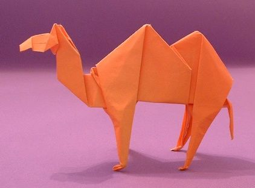
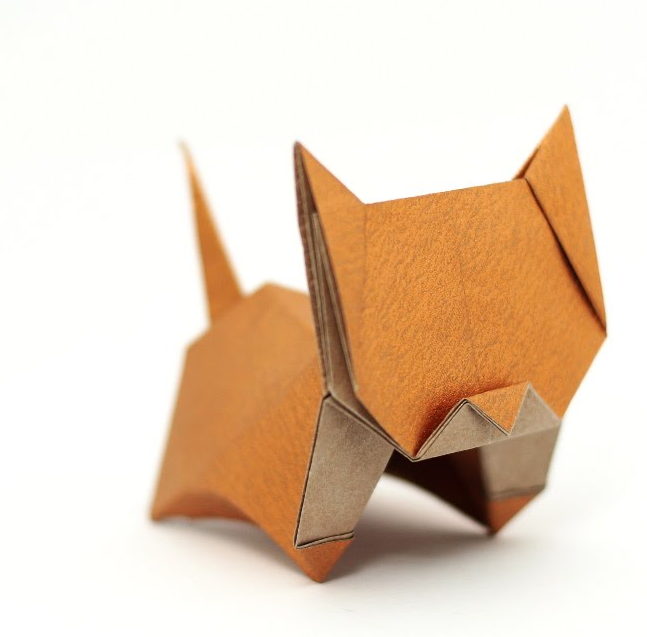
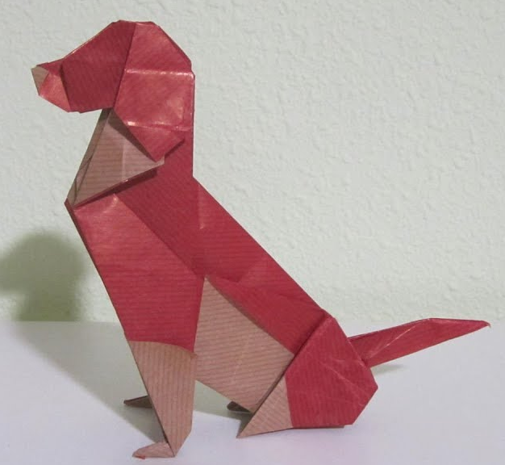
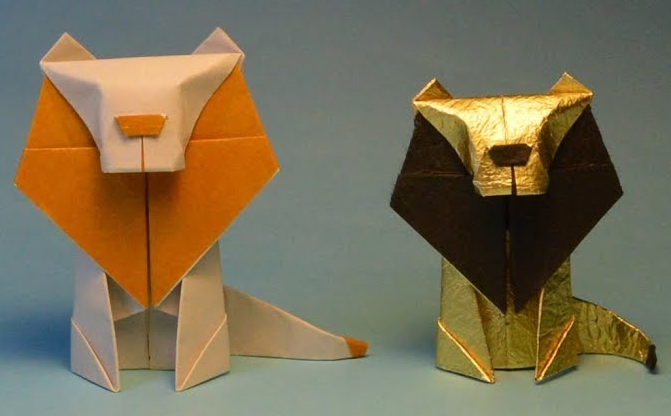
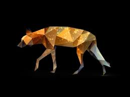

About Us
INTERESTING FACTS ABOUT ANIMALS..
hello guys in this website you can know some interesting facts about some animals.

Camels
- There are two types of camels: One humped or “dromedary” camels and two humped Bactrian camels.
- Camels have three sets of eyelids and two rows of eyelashes to keep sand out of their eyes.
- Camels have thick lips which let them forage for thorny plants other animals can't eat.
- Camels can completely shut their nostrils during sandstorms.
- Thanks to thick pads of skin on their chest and knees, camels can comfortably sit in very hot sand.
Shrimp
- A shrimp can average about 6 inches while the longest ever found was at 16 inches.
- here are 16 different stages of life are found in shrimp from egg to full adult.
- The average shrimp has 10 legs.
- May 9th is National Shrimp Day
- Every shrimp is actually born a male and then become females as they mature.

Cats
- Cats spend 70% of their lives sleeping.
- The oldest known pet cat existed 9,500 years ago.
- The richest cat in the world had £7 million.
- Cats walk like camels and giraffes.
- A cat was the Mayor of an Alaskan town for 20 years.

Dogs
- Dogs noses are wet to help absorb scent chemicals.
- The tallest dog in the world is 44 inches tall.
- Basenji dogs don’t bark, they yodel.
- A Greyhound could beat a Cheetah in a long distance race.
- 30% of Dalmatians are deaf in one ear.

Lion
- Lions are the only cats that live in groups.
- A group, or pride, can be up to 30 lions, depending on how much food and water is available.
- Female lions are the main hunters
- A lion's roar can be heard up to eight kilometres away.
- Lions scent mark their territory, using their wee, to create a border.

Hyena
- They are cunning hunter.
- Spotted Hyenas have 32-34 teeth including conical premolars designed specifically for cracking and crushing bone.
- They have powerful jaws
- They are amazingly intelligent.
- They have a history of conquering.